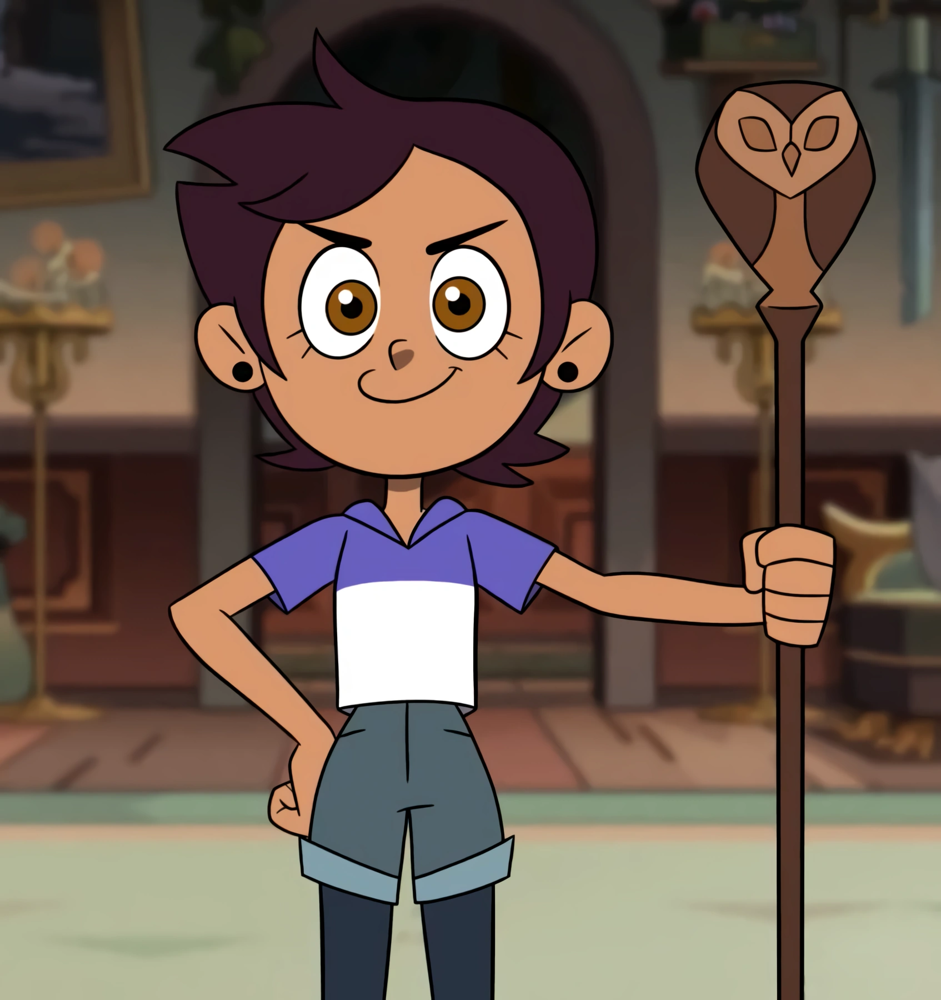
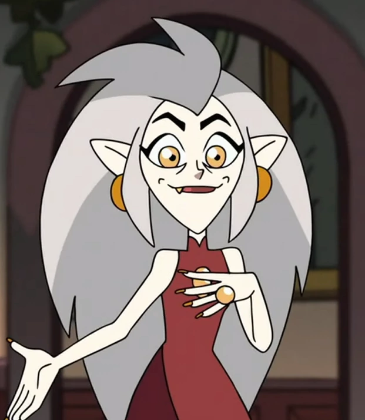
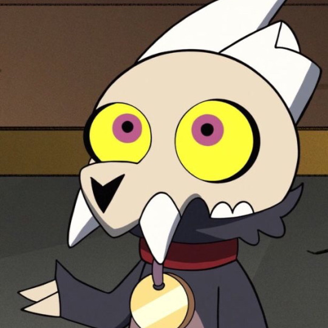
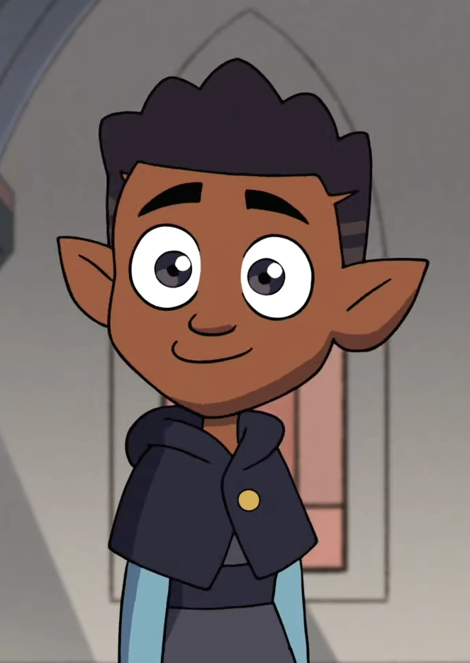
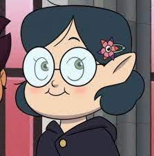
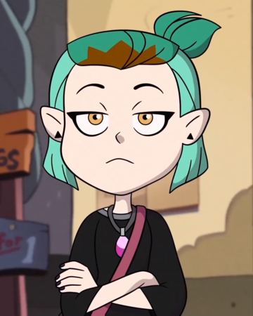
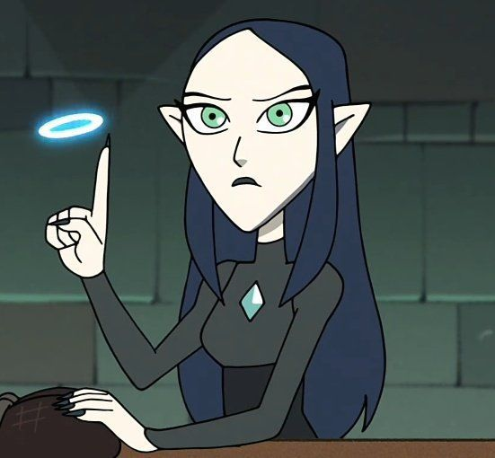
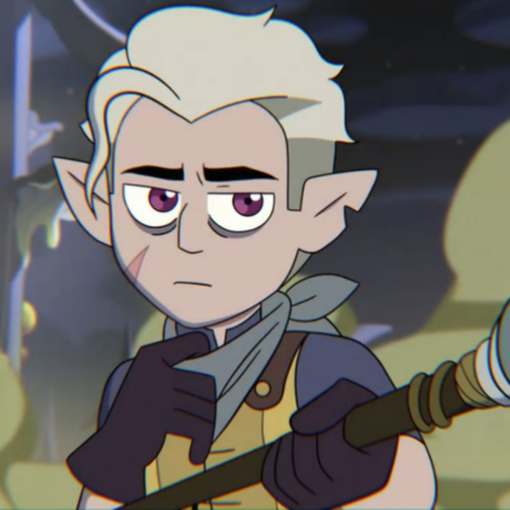
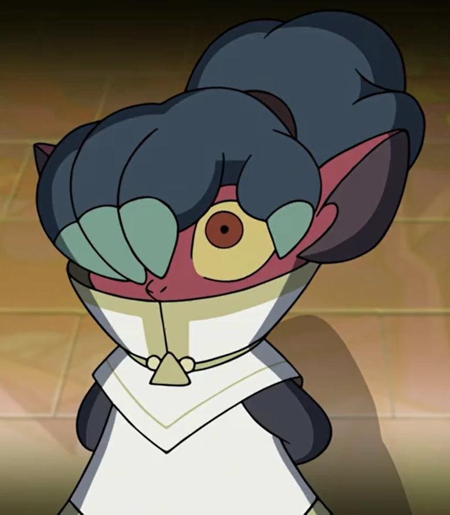
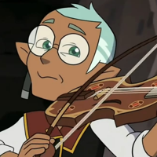

Inicio da pagina
Nome: Luz Noceda
Espécie: Humana
Idade: 14
Origem: Mundo Humano
Luz Noceda é a protagonista principal de A Casa Coruja. Ela é uma adolescente ansiosa de descendência latina que se deparou acidentalmente com um portal para as Ilhas Escaldadas no Reino dos Demônios, uma dimensão onde criaturas mágicas são reais e os humanos são desprezados e tratados como seres inferiores.

Inicio da pagina
Nome: Edalyn Clawthorne
Espécie: Bruxa
Idade: Indefinida/ final dos anos 40
Origem: Ilhas Escaldantes
Edalyn "Eda" Clawthorne é a deuteragonista de The Owl House. Ela é uma bruxa rebelde que foi amaldiçoada quando adolescente por sua irmã mais velha, Lilith, antes de fugir de casa e se tornar a bruxa selvagem mais procurada e poderosa das Ilhas Escaldantes.

Inicio da pagina
Nome: King Clawthorne
Espécie: Titã
Idade: aproximadamente 8
Origem: Ilhas Escaldantes
Rei Clawthorne é o tritagonista da Casa da Coruja. Ele é um jovem Titã que é filho adotivo e ajudante de Eda. Originalmente, ele uma vez procurou restaurar seu suposto título e glória como o "Rei dos Demônios", antes de tentar descobrir sua família e se reunir com eles. No entanto, mais tarde é descoberto que ele é realmente o último dos Titãs.

Inicio da pagina
Nome:Augustus Porter
espécie: Bruxo
Idade: 12
Origem: Ilhas Escaldantes
Augustus "Gus" Porter é um dos principais personagens coadjuvantes de The Owl House. Ele é filho do repórter Perry Porter, que quer que seu filho seja um mestre ilusionista, devido às suas habilidades em magia de ilusão, Augustus é um dos alunos mais jovens da Hexside School of Magic and Demonics, tendo aulas de nível de ensino médio, apesar de ter doze anos.

Inicio da pagina
Nome: Willow Park
Espécie: Bruxa
Idade: 14
Origem: Ilhas Escadantes
Willow Park uma das principais personagens coadjuvantes de The Owl House. Ela fazia parte da rota de abominações, mas agora está na rotaa de plantas. Willow é naturalmente muito talentosa em magia de plantas, mas como ela havia sido forçada a entrar na rota de abominações, muitos personagens assumiram que ela era incompetente e fraca, mas após um tempo sua magia natural foi reconhecida e ela foi transferida de rota.

Inicio da pagina
Nome: Amity Blight
Espécie: Bruxa
Idade: 14
Origem: Ilhas Escaldantes
Amity Blight é um dos principais personagens coadjuvantes de The Owl House. Ela é uma jovem bruxa prodigio que frequenta a Escola Hexside. Embora ela tenha sido originalmente descrita como uma antagonista, depois de se relacionar com Luz, Amity se tornou uma pessoa melhor, sendo capaz de enfrentar seus pais, recuperar sua amizade com Willow e se tornar uma boa e próxima amiga de Luz, posteriormente sua namorada.

Inicio da pagina
Nome: Lilith Clawthorne
Espécie: Bruxa
Idade: Indefinida/ final dos anos 40
Origem: Ilhas Escaldantes
Lilith Clawthorne é um personagem importante em The Owl House, servindo como antagonista na segunda parte da primeira temporada até o episódio 19, e sendo um personagem coadjuvante a partir da segunda temporada. Ela é a irmã mais velha de Eda e a ex-líder e principal estudiosa histórica do Coven do Imperador. Ela está atualmente morando com seus pais, tentando recuperar o tempo perdido e desenvolver uma cura para a maldição do Eda.

Inicio da pagina
Nome: Hunter
Espécie: Meio sangue(humano/bruxo)
Idade: 16
Origem: Ilhas Escaldantes
Hunter, anteriormente conhecido como Guarda Dourada, é um personagem importante de The Owl House, retratado originalmente como um antagonista. Ele era o braço direito do Imperador Belos e o ex-chefe do Coven do Imperador. Após descobrir o que realmente era Balos, percebendo que ele nunca mais poderia voltar, Hunter abandona Belos e o Coven do Imperador completamente. Se mudando para a Escola Hexside para se esconder do alcance do Imperador, conhecendo os alunos de lá e, depois de aceitar sua identidade, Hunter estabeleceu como objetivo ajudá-los a enfrentar Belos e o Dia da União.

Inicio da pagina
Nome: Kikimora
Espécie: Demônio bipede
Idade: Desconhecida
Origem: Ilhas Escaldantes
Kikimora é um personagem antagônico recorrente em The Owl House. Ela é a ex-assistente do Imperador Belos e entrega suas ordens a outros subordinados dentro ou fora do Coven do Imperador. No final da segunda temporada, Kikimora se volta oficialmente contra o Imperador Belos depois de descobrir sua natureza enganosa, ajudando King a alcançar o Colecionador para subjugar Belos e parar o feitiço de drenagem.

Inicio da pagina
Nome: Raine Whispers
Espécie: Bruxo
Idade: Alguns a mais que Eda
Origem: Ilhas Escaldantes
Raine Whispers é um personagem coadjuvante de The Owl House. Eles são a recém-instalada Bruxa Chefe do Bard Coven e ex-parceira de Edalyn Clawthorne. Mais tarde, eles fundaram um pequeno grupo rebelde conhecido como Bards Against the Throne, com a intenção de libertar bruxas selvagens que não querem ser forçadas a se juntar a um coven.